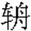

上海租界上的“国学家”，以为做白话文的大抵是青年，总该没有看过古董书的，于是乎用了所谓“国学”来吓呼他们。
《时报》上载着一篇署名“涵秋”的《文字感想》[180]，其中有一段说：
“新学家薄国学为不足道故为钩

格磔之文以震其艰深也一读之欲呕再读之昏昏睡去矣”领教。我先前只以为“钩格磔”[181]是古人用他来形容鹧鸪的啼声，并无别的深意思；亏得这《文字感想》，才明白这是怪鹧鸪啼得“艰深”了，以此责备他的。但无论如何，“艰深”却不能令人“欲呕”，闻鹧鸪啼而呕者，世固无之，即以文章论，“粤若稽古”[182]，注释纷纭，“绛即东雍”[183]，圈点不断，这总该可以算是艰深的了，可是也从未听说，有人因此反胃。呕吐的原因决不在乎别人文章的“艰深”，是在乎自己的身体里的，大约因为“国学”积蓄得太多，笔不及写，所以涌出来了罢。
“以震其艰深也”的“震”字，从国学的门外汉看来也不通，但也许是为手民[184]所误的，因为排字印报也是新学，或者也不免要“以震其艰深”。
否则，如此“国学”，虽不艰深，却是恶作，真是“一读之欲呕”，再读之必呕矣。
国学国学，新学家既“薄为不足道”，国学家又道而不能亨，你真要道尽途穷了！
九月二十日。
注 释
[179] 本篇最初发表于1922年9月20日《晨报副刊》，署名某生者。
[180] 涵秋 李涵秋（1874—1923），别署沁香阁主、韵香阁主，江苏江都人，鸳鸯蝴蝶派的主要作家之一。作品有《广陵潮》等。他的《文字感想》，载1922年9月14日上海《时报》的《小时报》专页。
[181] “钩格磔” 象声词，鹧鸪鸣声。唐代李群玉《九子坂闻鹧鸪》：“正穿诘曲崎岖路，更听钩格磔声。”又明代李时珍《本草纲目》卷四十八《禽部》“集解”引孔志约的话：“鹧鸪生江南，形似母鸡，鸣云‘钩格磔’者是。”
[182] “粤若稽古” 语出《尚书·尧典》：“曰若稽古帝尧，曰放勳，钦明文思安安。”粤，亦作“曰”，发语词。关于这四个字，自汉代以来注释的人很多，而各家的注释多不相同。据唐代孔颖达注，是“能顺考古道而行之”之意。这几句话的意思，孔颖达疏：“曰能顺考校古道而行之者是帝尧也。又申其顺考古道之事，曰此帝尧能放效上世之功而施其教化，心意恒敬，智慧甚明，发举则有文谋，思虑则能通敏，以此四德安天下之当安。”
[183] “绛即东雍” 语出唐代樊宗师《绛守居园池记》。樊宗师的文章以艰涩著名，很难断句。注释这篇文章的人很多，断句也不尽相同。该文第一句“绛即东雍为守理所”，有人断为“绛即东雍，为守理所。”也有人断为“绛，即东雍为守理所。”按樊宗师曾任绛州刺史，这句话的意思是：绛就东雍旧地建置太守治所。
[184] 手民 指排字工人。